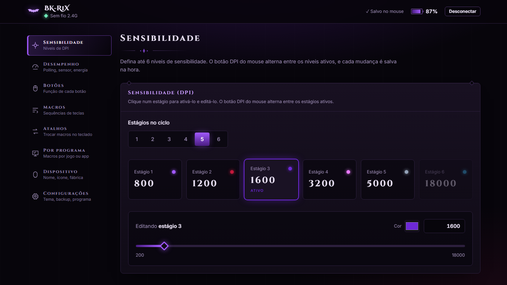
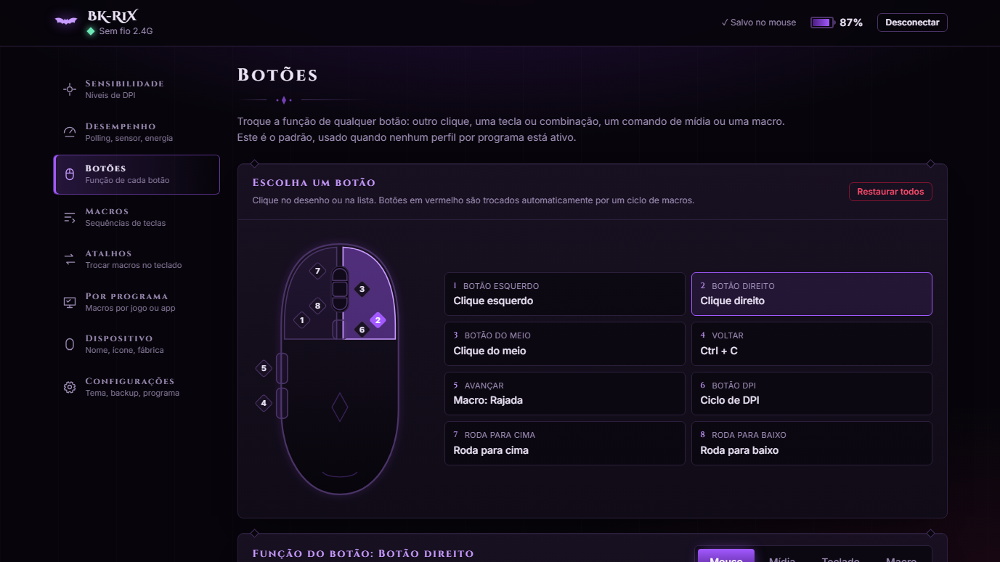
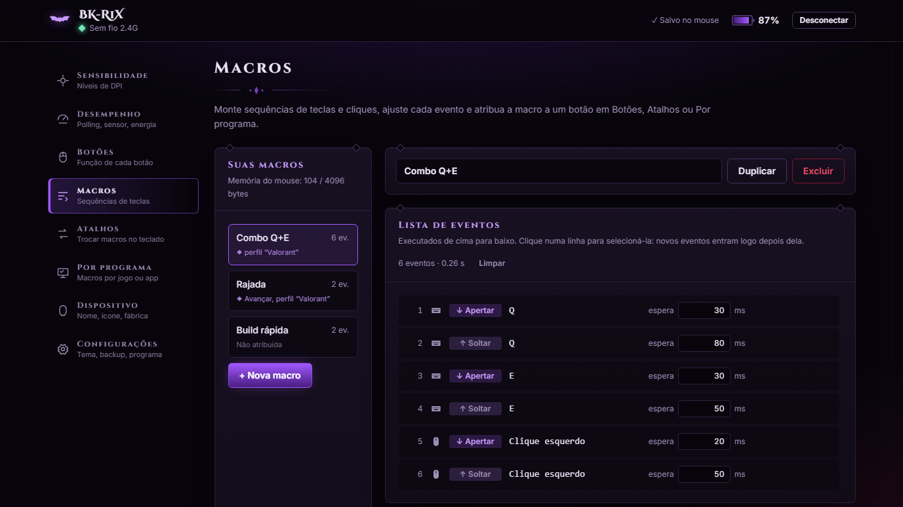
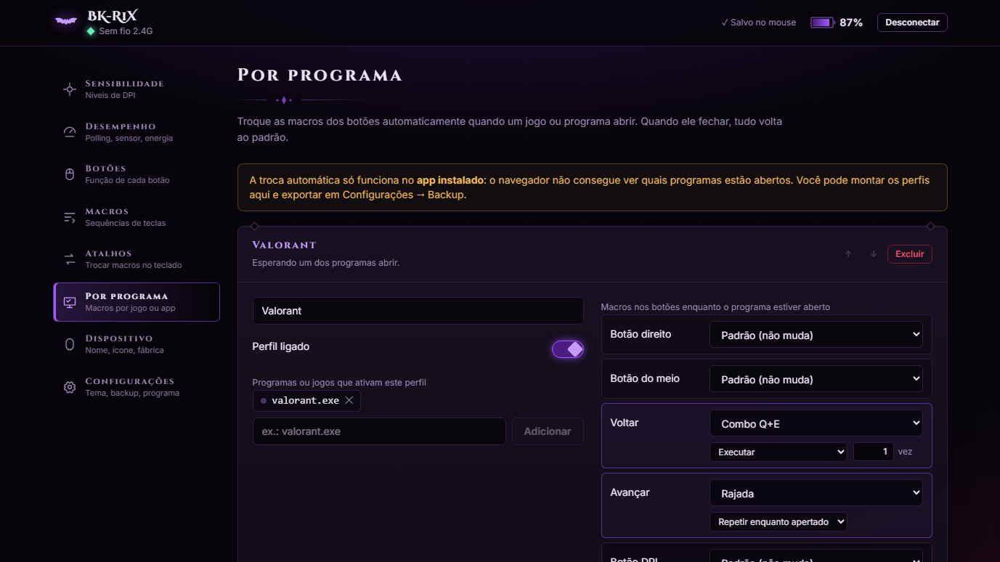
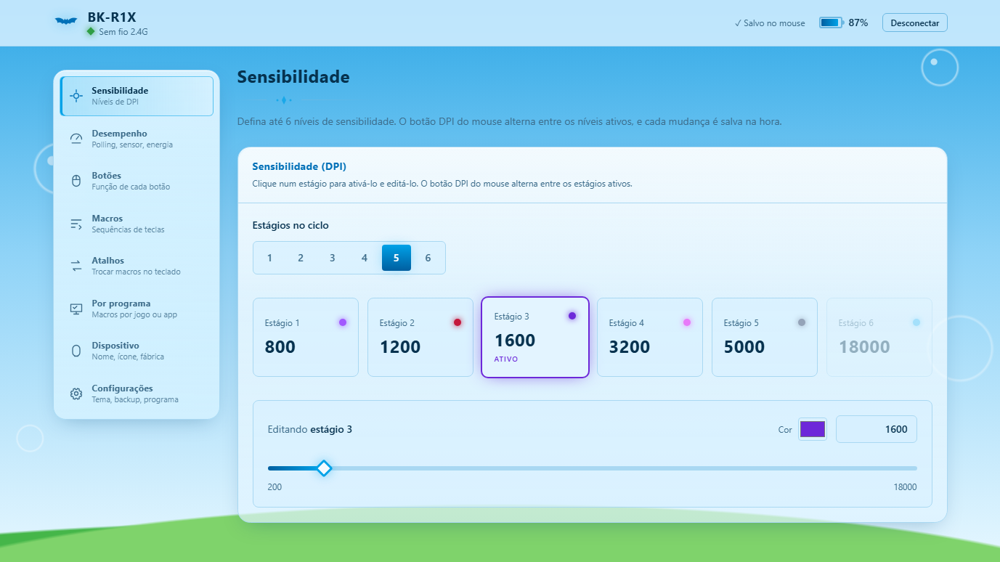
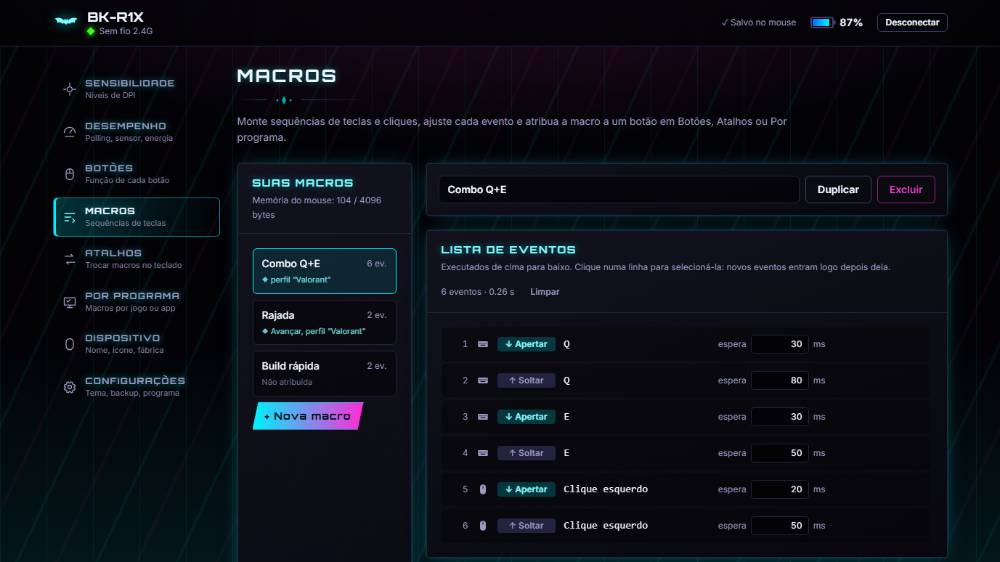
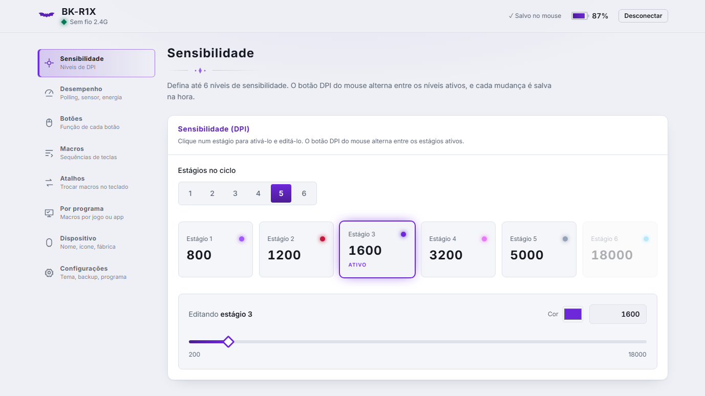
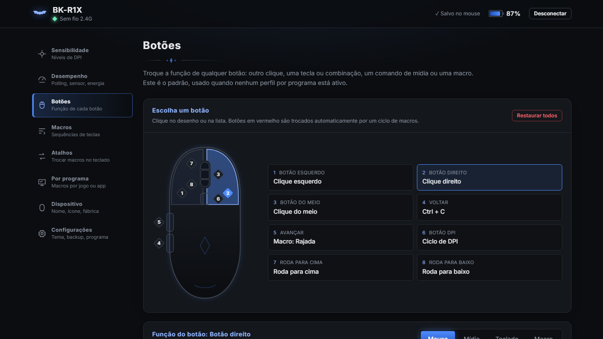

BK-R1X Control
O configurador open-source para o mouse BK-R1X. DPI, botões, macros, atalhos globais e perfis que trocam sozinhos quando você abre um jogo. Funciona offline.
Projeto independente, sem ligação com o fabricante do BK-R1X.

Tudo o que o seu mouse faz
As configurações ficam gravadas na memória do mouse: depois de ajustar, ele funciona igual em qualquer computador.
DPI e desempenho
Até 6 níveis de DPI (200 a 18000), polling rate até 1000 Hz, lift-off distance, debounce, Motion Sync e economia de energia.
Botões
Troque a função de qualquer botão: outro clique, uma tecla ou combinação, comandos de mídia ou uma macro.
Macros
Teclado visual no padrão ABNT2, botões do mouse, gravação com os tempos reais e uma lista de eventos para ajustar cada detalhe.
Atalhos globais
Troque a macro de um botão com um atalho de teclado, como Ctrl + Win + ., sem sair do jogo.
Perfis por jogo
Abriu o jogo, os botões recebem as macros dele. Fechou, tudo volta ao normal. Sozinho, sem você fazer nada.
5 temas e seu estilo
Roxo Gótico, Escuro, Claro, Frutiger Aero e Jumpstyle. Dê um nome e um ícone ao mouse; no app instalado eles viram o ícone do programa.

Clique no botão, escolha a função
Um desenho do mouse mostra cada botão. Escolha um clique, uma tecla, um comando de mídia ou uma macro, e pronto: já está gravado.

Macros do seu jeito
Grave do jeito que você joga ou monte evento por evento: apertar, soltar e quanto tempo esperar entre cada um.

Um perfil para cada jogo
Defina quais macros cada jogo usa. Quando o jogo abre, os botões trocam; quando fecha, voltam ao seu padrão.
Temas
Escolha o visual em Configurações → Tema.




App ou navegador?
Os dois configuram o mouse do mesmo jeito. O app instalado faz mais coisas porque roda em segundo plano.
| Recurso | Navegador | App Windows |
|---|---|---|
| DPI, desempenho, botões e macros | ✓ | ✓ |
| Temas, nome e ícone do mouse | ✓ | ✓ |
| Atalhos de macro funcionando dentro do jogo | só com a aba em foco | ✓ |
| Perfis que trocam sozinhos ao abrir um jogo | — | ✓ |
| Fica na bandeja e inicia com o Windows | — | ✓ |
| Precisa instalar | não | sim |
Pelo botão abaixo ou na página de Releases do GitHub.
Clique em “Mais informações” e depois em “Executar assim mesmo”.
O app encontra o mouse sozinho. Ao fechar, ele fica na bandeja.
Perguntas
É o programa oficial do BK-R1X?
Não. É um projeto independente e open-source, feito a partir do estudo de como o configurador oficial conversa com o mouse. Não tem ligação com o fabricante.
Funciona em qual navegador?
Google Chrome ou Microsoft Edge no computador (e outros baseados no Chromium). Firefox, Safari e celulares não permitem acesso a dispositivos USB pelo navegador.
Minhas macros ficam salvas onde?
As configurações vão para a memória do próprio mouse. A lista de macros, os perfis e o tema ficam salvos no computador; em Configurações → Backup você exporta tudo para um arquivo.
Funciona com outros mouses?
Foi feito e testado só para o BK-R1X (receptor 2.4G e cabo USB).
Quem fez?
Um projeto de fã, desenvolvido com auxílio de inteligência artificial (Claude, da Anthropic) e testado em um BK-R1X real. O código é aberto, sob a licença MIT.